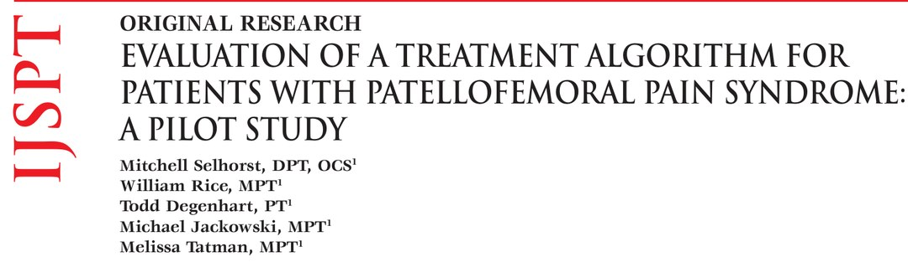
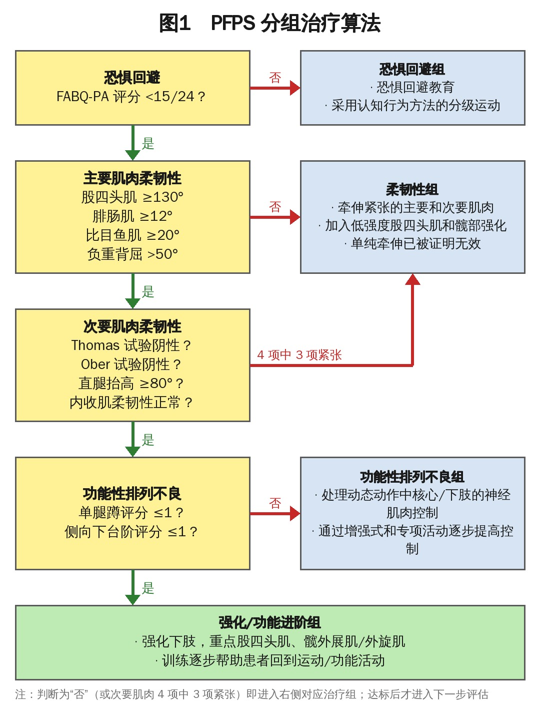
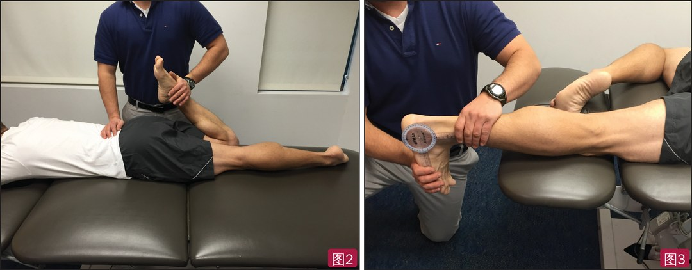
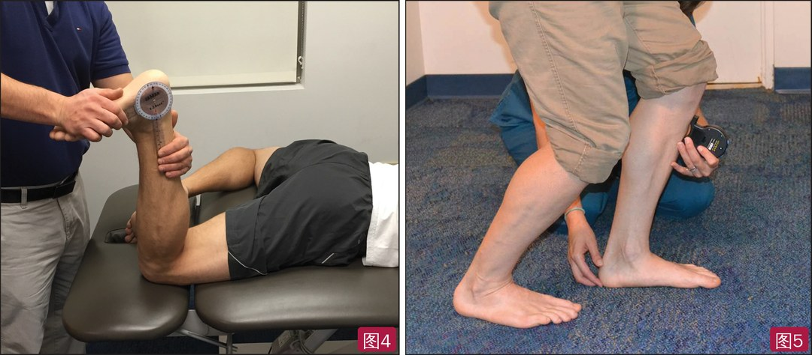
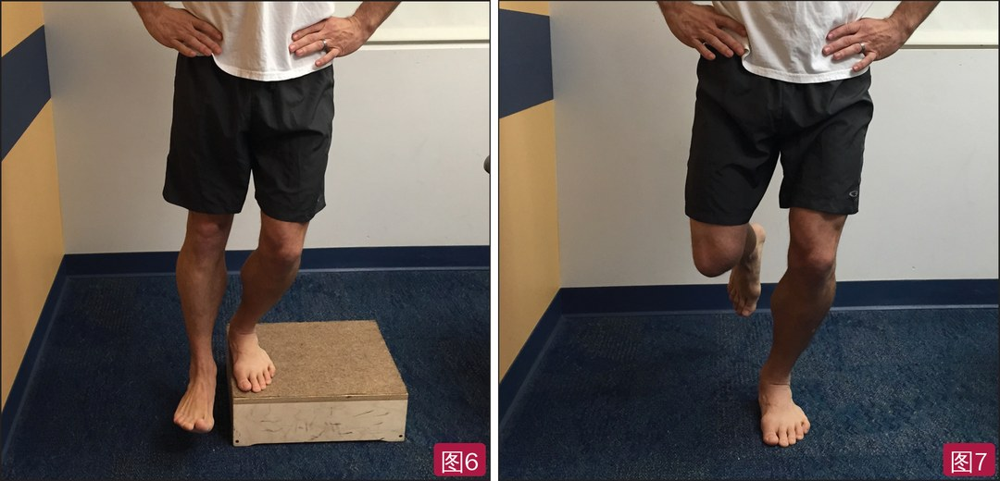
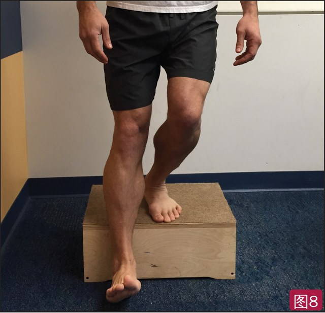
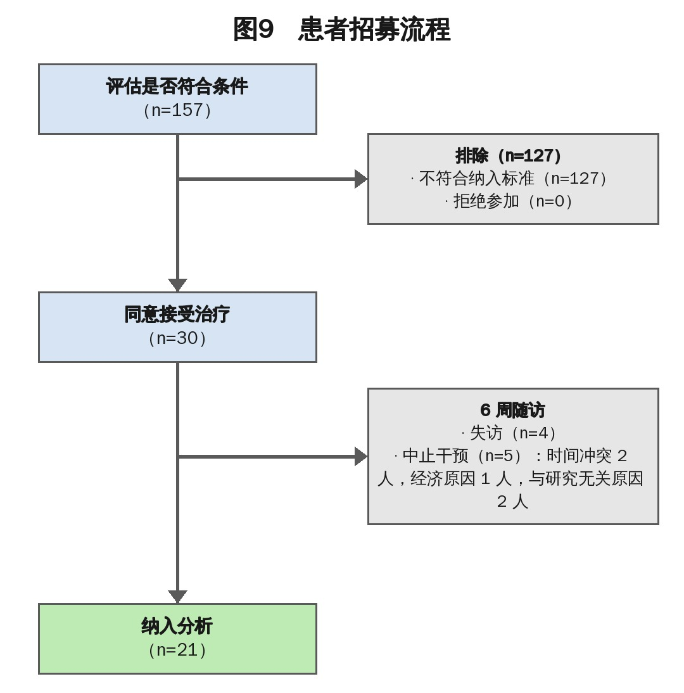

🔖原文首页（IJSPT 2015 年第 10 卷第 2 期）
📚 文献卡片
▪ 英文原题：Evaluation of a Treatment Algorithm for Patients with Patellofemoral Pain Syndrome: A Pilot Study（髌股疼痛综合征治疗算法的评估：预试验）
▪ 作者：Mitchell Selhorst, DPT, OCS · William Rice, MPT · Todd Degenhart, PT · Michael Jackowski, MPT · Melissa Tatman, MPT
▪ 机构：Nationwide 儿童医院运动与骨科物理治疗部，美国俄亥俄州哥伦布
▪ 期刊：International Journal of Sports Physical Therapy（IJSPT）
▪ 年卷期：2015;10(2):178-188
▪ PMCID：PMC4387725
▪ 文章类型：原创研究（预试验）
▪ 证据级别：原文标注 1b
▪ 注册号：ClinicalTrials.gov NCT01767246
▪ 关键词：patellofemoral pain · knee pain · physical therapy
髌股疼痛综合征（PFPS）占年轻活跃人群膝痛的 25%～40%，表现为髌骨周围的膝前痛，在深蹲、上下楼、跑、跳等增加髌股关节压力的活动中加重，青少年和女性更多见。它是多因素的“综合征”而非明确诊断，被认为是最难处理的骨科问题之一；96% 的患者确诊 4 年后仍有问题。
• 可能的原因：髌骨轨迹异常导致髌股关节压力过大，相关因素包括髋和股四头肌无力、股内侧斜肌激活延迟、Q 角增大、下肢力学改变和柔韧性下降
• 处理顺序可能很重要：先练髋再练股四头肌，训练时更少痛；柔韧性差者更容易出现下肢力学异常；下肢力学不良时做传统强化，髌股接触力反而更大
• 已有的分类系统只看身体损害，没回答“患者同时符合多个亚组怎么办”
• 心理社会因素同样重要：Piva 等发现恐惧回避信念是功能和疼痛结局的最强预测因子；SF-36 心理健康与运动员髌股症状严重程度相关
作者设计了一个按顺序处理的 PFPS 分组算法：恐惧回避 → 柔韧性 → 功能性排列不良 → 强化/功能进阶，达标才进入下一组。本预试验评估：① 能否在临床中正确执行该算法；② 能否招募足够患者做正式 RCT；③ 结局指标是否合适。
| 项目 | 结果 |
|---|---|
| 纳入 | 157 名膝痛转诊患者中 30 人入组（19.1% 符合条件），无人拒绝；平均每月 2.5 人 |
| 完成 | 21 人完成，脱落 30% |
| 分组一致性 | 两位治疗师独立分组，15 人中 14 人一致，Kappa = 0.90 |
| AKPS | 平均提高 18.00（SD 6.27）分，100% 完成者达到临床意义（≥10 分） |
| GROC | 平均 +5.30（SD 1.42），100% 达到临床意义（≥+3） |
| 疼痛 NPRS | 平均降低 1.84 分，仅 33% 达临床意义；38% 基线 <2 分，存在地板效应 |
| 正式 RCT | 每组 25 人；按 15% 脱落估算共需 58 人 |
一句话概括：先看怕不怕动，再看紧不紧、动作对不对，最后才是强化——按顺序处理，6 周后功能评分全部有意义改善，但缺少对照组。
• 两家儿科门诊物理治疗诊所连续转诊的患者；伦理委员会批准，患者及监护人书面知情同意
• 每周 2 次、共 6 周 12 次治疗，另加每日家庭训练
• 结局：NPRS（最近 24 小时当前、最好、最差疼痛的平均）、前膝痛量表（AKPS，0～100 分）、整体变化评分（GROC，−7～+7），评估时和出院时测；FABQ-PA 只在初评时测
• 两位治疗师在同一天独立评估同一患者并分组，互相盲法，用 Cohen's Kappa 计算一致性
表1 纳入与排除标准
| 纳入标准 | 排除标准 |
|---|---|
| 年龄 ≥12 岁 | 主诉为髌腱、髌骨下极或胫骨结节压痛 |
| 髌骨周围膝痛 | 膝关节其他诊断：髌腱炎、髂胫束综合征、Osgood-Schlatter 病、Sinding-Larsen-Johansson 病、骨折或韧带损伤 |
| 既往膝关节手术 | |
| 髌骨半脱位或脱位史 |
另外排除：不能遵从指令、有限制活动的疾病史、怀孕或哺乳、表示无法按时复诊者。

🔖图1：PFPS 分组治疗算法（原图为英文，已按原内容中文重绘）
• 针对膝关节修改的 FABQ-PA >15 分进入恐惧回避组
• 治疗：教育 + 逐步暴露的分级运动；淡化解剖学发现，鼓励患者主动参与康复；训练以功能进步为目标，而非以疼痛为目标
| 测试 | 方法 | 受限标准 |
|---|---|---|
| 股四头肌（图2） | 俯卧，治疗师按住髂后上棘固定髋，被动屈膝到末端 | <130° |
| 腓肠肌（图3） | 俯卧，测试侧伸膝、对侧髋呈 4 字位；确认距下关节中立后被动背屈 | <12° |
| 比目鱼肌（图4） | 俯卧，测试侧屈膝 90°、对侧髋呈 4 字位；确认距下关节中立后被动背屈 | <20° |
| 负重背屈（图5） | 弓步测试：膝尽量靠近墙、足跟不离地，用数字倾角仪测，取 3 次平均 | <50° |
• 主要肌肉任一受限，或次要肌肉 4 项中 3 项受限 → 柔韧性组
• 次要肌肉：Thomas 试验（屈髋肌）、Ober 试验（髂胫束）、直腿抬高（腘绳肌，≥80°）、仰卧内收肌柔韧性
• 治疗：牵伸紧张肌肉，同时加入低强度股四头肌和髋部强化（单纯牵伸无效）

🔖图2（左）：股四头肌柔韧性测试；图3（右）：腓肠肌柔韧性测试

🔖图4（左）：比目鱼肌柔韧性测试；图5（右）：负重背屈（弓步）测试
• 用侧向下台阶测试（图6）和单腿蹲测试（图7）评估，评分为“中等”或“差”进入此组
• 侧向下台阶：站在 20 cm 台阶上，躯干直立、双手叉腰，测试腿屈膝约 60°，直到对侧足跟轻触地面再回到起始位；膝对准第二趾，做 5 次
• 单腿蹲：单腿站立，膝对准第二趾，蹲到看不见自己脚趾再起，做 5 次
• 治疗：动态活动中的下肢力学，以及维持正确排列所需肌肉的强化；按患者的功能活动个体化

🔖图6（左）：侧向下台阶测试；图7（右）：单腿蹲测试
• 高水平下肢强化，重点股四头肌、髋外展肌和外旋肌，并逐步回到全部活动
• 测试：单腿跳远、三级跳远、交叉跳远（Myer 等）和计时下台阶测试（图8）；肢体对称指数 <90% 进入此组
• 计时下台阶：从 20 cm 台阶向前下踏，下方腿足跟轻触地面后返回，计 30 秒内次数，两侧都测

🔖图8：计时下台阶测试

🔖图9：患者招募流程（原图为英文，已按原内容中文重绘）
表2 基线资料（n=21）
| 变量 | 全部患者 |
|---|---|
| 年龄（岁） | 14.10（1.38） |
| 性别（女性） | 14（66.7%） |
| FABQ 体力活动分量表 | 12.05（5.57） |
| 疼痛 | 2.20（0.99） |
| 前膝痛量表（AKPS） | 77.90（8.99） |
数据为均数（标准差）或人数（%）；FABQ：恐惧回避信念问卷。
• 安全性：无严重不良反应；少数轻度酸痛和训练时轻度膝痛，无人因副作用退出
• 招募：一年内 157 名膝痛患者转诊，19.1% 符合条件，无人拒绝；平均每月 2.5 人；但30% 入组者未完成治疗
• 执行：病历回顾显示治疗师 100% 遵循算法；15 人双人评估，14 人分组一致，Kappa = 0.90（95% CI 0.72～1.00）
• AKPS：平均提高 18.00（SD 6.27）分，完成者 100% 达到临床意义
• NPRS：平均降低 1.84（SD 1.04）分，仅 33% 达临床意义（MDC 2 分）；38% 基线 <2 分，根本不可能达到
• GROC：平均 +5.30（SD 1.42），100% 达到临床意义
• 样本量：以 AKPS 为主要结局（α=0.05，β=0.20，组间最小差异 10 分，SD 12.4），每组 25 人；按 15% 脱落共需 58 人
• 5 名治疗师经培训后都能一致地评估和治疗，认为算法在常规门诊中容易执行
• 目前只有 20% 的治疗师参与招募，增加参与者即可在一年内完成正式 RCT 招募
• 疼痛测量要改：三项平均的 NPRS 有地板效应，正式试验建议用最高疼痛或活动时疼痛
• 降低脱落：争取经费补偿患者时间和费用；在知情同意书中讲清楚参与要求（2 人因脑震荡和无关手术退出属不可避免）
• 算法微调：很多患者负重背屈卡在 48～49°，难以达到 50° 进入下一组，建议把标准降到 48°
• 治疗师和患者无法设盲，可能有治疗偏倚；但结局都是患者自评
• 作者强调：预试验结果用于指导正式试验设计，在完成足够样本的 RCT 前不应推广
• 没有对照组：所有患者都接受算法治疗，方法部分自称“随机对照预试验”、图 9 标题写“随机分组”、摘要提到“两组”、证据级别标为 1b，但实际是单组预试验，改善可能来自自然病程、回归均值或一般治疗效应
• 样本小、脱落高：30 人入组、21 人完成（脱落 30%），只分析完成者，“100% 有效”可能被高估
• 人群特殊：平均 14 岁的青少年，基线疼痛很低（2.2/10）、AKPS 已达 77.9 分，结论难以推广到成人或症状更重者
• 亮点：把恐惧回避放进分组、明确“先后顺序”和每一步的量化通过标准，分组一致性高（Kappa 0.90），临床可操作性好
• 前后不一致：正文说柔韧性受限是“三块主要肌肉之一”，但实际列了 4 项（含负重背屈）；正文写 FABQ >15 进入恐惧回避组，流程图写 “<15/24” 才通过，15 分本身归属不明；功能性排列不良正文写“中等或差”，流程图写评分 ≤1，评分标准未在文中给出
• 小瑕疵：“sequential manor” 应为 manner；弓步测试写成 “lung test”；Noordzij 拼成 Noordjiz
① 先看心理：FABQ-PA >15 → 教育 + 分级暴露，以功能为目标
② 再看柔韧：股四头肌 <130°、腓肠肌 <12°、比目鱼肌 <20°、负重背屈 <50°（建议改 48°），或次要肌肉 4 项中 3 项紧 → 牵伸 + 低强度强化
③ 再看动作：单腿蹲、侧向下台阶评分中等或差 → 动态下肢力学和稳定肌强化
④ 最后强化：单腿跳/计时下台阶 LSI <90% → 股四头肌、髋外展外旋肌强化和功能进阶
⑤ 结果：6 周后 AKPS +18 分、GROC +5.3，但单组、样本小、脱落高
⑥ 启示：多因素问题可以“排队处理”，正式 RCT 需每组 25 人
欢迎关注骨科康复小黄公众号，获取更多物理治疗的专业知识！
📄参考文献：
Selhorst M, Rice W, Degenhart T, Jackowski M, Tatman M. Evaluation of a Treatment Algorithm for Patients with Patellofemoral Pain Syndrome: A Pilot Study. Int J Sports Phys Ther. 2015;10(2):178-188. PMCID: PMC4387725.
文中图片均来自原文：图 1 分组算法和图 9 招募流程按原内容中文重绘，图 2～8 照片无文字；表 1～2 已译为中文，仅用于学术交流。